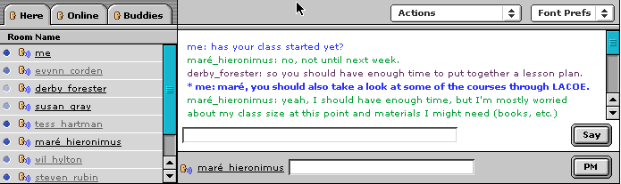
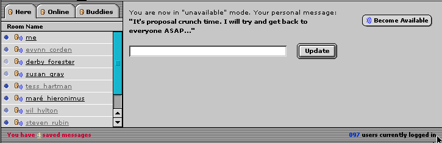

Priorities for features indicated in brackets []. Priorities are marked with a 1 (must have by Sept 2002); 2 (should have by December 2002); or a 3 (may have my June 2003). If a feature is marked but its subfeatures are not, this means that the subfeatures have the same priority as the larger feature.
Communication tools will be integrated throughout the TI2 environment to
support all of the other features (i.e. courses, groups, etc.). Users must be
able to work together synchronously as well as asynchronously. Some of the tools
are room- or place-based meaning that the message is only seen in a certain
location while other tools are user-based meaning the message goes either to
the user's personal email account or a window appears where ever they are in
Tapped In as is the case with Private Message.
Communication tools will include:
|
Room-based (many to many; one to many) |
User-based (one to one; one to many) |
|
|
Synchronous |
Chat [1] |
Private Message (PM) [1] to reach members in any room |
|
Asynchronous |
Saved Messages [1] on Me tab Announcements [2] in group and course room Discussion Board [1] available in all rooms.
Polls [3] in group and course room |
Mailing lists [1] |
Chat [1]
A chat window will appear on every room (see figure below). The chat window includes
The format of messages in the output window is not set, but will be of one of the following forms:
Mark: has your class started?
Mark says, "has your class started?"
The MOO substituted pronouns, so that text you wrote appeared to you as "You say,...." while appearing to others as "Mark says,..". This feature could be provided as an option or user preference [2]. The first version can show the same text to all users, including the speaker (i.e., Mark will see "Mark says...." in the output field, the same as what others see).

Dimensions of the various areas should be similar to that shown above, but may vary when implemented. For example, the Here/Online/Buddies area is about 200 pixels wide above, and the rest of the width of the page goes to the chat area. The input fields should fill the space up to the Say and PM buttons, unlike in the image above. The input areas for chat and pm will be one line each. If we allow resizing, the chat output area will be the area to grow or shrink.
200 pixels wide, and the rest of the width of the page goes to the chat area. He has the chat menu area (Actions, Fonts) as about 35 pixels high, and the input fields (chat and pm together) area as about 70 pixels high. See
The chat should handle at least 500 simultaneous logins with up to 50 people in one room, or 500 simultaneous users in one room listening to one speaker. [1] Support for up to 1000 simultaneous users is desired [3]. Some rooms may also restrict the number of speakers or enforce moderated discusson [2].
Chat transcripts should be saved and emailed to users upon logout.
Note: Chat settings and preferences (like font size, tab placement, mood/status, etc.) are NOT saved across sessions.
Private Message [1]
To send a PM, a user clicks on the face icon beside a username in the Here, Online, or Buddies list. The username then appears beside the PM text field at the bottom. The user can then enter text into the PM field and click the PM button to send the text to the other user.
Private messages will be visually distinguished from other chat messages in the output area. They may have a prefix like "(*PM)",[1] or they may be displayed in bold text [2]. E.g.,, If I'm Joe and Mark sends me a PM, I will see
(*PM) Mark says, "Can we talk after the meeting?"
and Mark will see
(PM to Joe) Mark says, "Can we talk after the meeting?"
If a user sends a PM to another user who is not logged in or logged in and not available, that message is saved in the other user's Saved Messages. The sender will then see an additional line like:
(PM to Joe is saved, Joe is unavailable: It's proposal crunch time. I will try and get back to everyone ASAP...)
We could make the name of a person in the output area clickable for fast PM replies, but this may be technically difficult [3].
Emote [2]
As we do now in TAPPED IN, if a user types a special character (like a ":") before what they type in an imput field, it will be displayed as an emote. For example, if I type the following into either the SAY or PM input field
I'm happy
and press Say or PM, the recipient(s) would see one of
Patti: I'm happy
Patti says, "I'm happy"
But if I type
:smiles
they would see
Patti smiles
We could also consider adding an Emote... item to the Actions menu [3] E.g., we could prepopulate a 2nd level menu with emote text, like smiles, laughs, waves, and allow a Custom Message to be set. Selecting an emote item could put it in the chat input area.
Broadcast [2]
We may need to support broadcast messages by TAPPED IN staff to all users. Like emotes, we could do this with a special keyboard character or command, especially since it will only be available to a few, select (staff) members. Broadcast messages may appear on the bottom left status area of the window (see Status Area below).
Font Prefs [1]
If a user changes the font size in the Font prefs menu, then the font size of the 2 input areas and 1 output area will change to this size [1]. No other fonts (the menus, the lists, etc.) will change.
If a user chooses a color from the Font prefs menu, then all of her messages will appear in this color (to herself and to others) in the output window.
TBD: Font menu may be moved to the Actions menu. If so, it may be split out into to items: Set My Font Color and Set Font Size.
Set Status [1]
Users can indicate their "moods" or "status" via the Actions/Set
Status button. These are just tags (like happy, busy, cooking) and these do
not do
anything except appear by their name when they talk or when you PM them.
For example, if Mark selects Actions/Set Status/busy, any text he types will appear in chat or PM with at [busy] flag, as so:
Mark [busy]: has your class started?
A set of predetermined status options will appear in the 2nd tier menu (or as a popup window if tiered menus are not technically possible). These preset options include: busy, out to lunch, be right back, stepped out.
A final menu option called "custom message" [2] will appear below these preset options, and pop up a text dialog if selected. In this dialog the user can type custom status text and it will be set.
Become Unavailable [2]
Folks who really want to be completely unavailable can use the "Become Unavailable" option under the Action menu. When you are in unavailable mode, others can see that you are online and where you are, but they cannot talk to you in real time. You can see who all the information in the awareness tabs (who is online, here, your buddies) and can move around to different rooms, but you cannot chat or PM to people. Basically, unavailable mode means you have awareness and movement, but no communication.
If you choose Become Unavailable, then your chat area gets covered with a message saying that others can't contact you now, a text field appears where you can edit your unavailable message (what others see if they try to PM you), and a "Become Available" button appears that you can click to return to chat or PM.
In the Here/Online/Buddies tabls, unavailable users appear in grey font, while available users are in black font.
If you get a PM while you're unavailable, you will be notified in this area in red text that your new PMs are in your saved messages. The person who PM'd you will get your unavailable message.
Contents of the chat window while you are in unavailable mode will not be recorded to your transcript. You only get to see what you hear and what others expect you to hear. If you are unavailable then others may want to say things assuming you can't hear them. If you can get a transcript of what they said, it may violate their privacy. If you want to hear a discussion, you must be available.

Project URL [1]
To project a url to other users in the same room or to an individual, the user types a url into the Say field (to project ot the room) or the PM field (to project to an individual) and then selects Project Url from the Actions menu. The url will then open in a new window on the screen of the recipient(s) (everyone in the room, or the individual).
If the user just presses the Say or PM button and a URL is in the input field, it will be treated as normal text, although future versions may make the url text into a link so that users can click on it at will to pop up a new window with the URL [3].
Scratch Pad [2]
When a user selects Scratch Pad from the Actions menu, a new window appears with a text area in which they can compose longer message. The scratch pad will have a "Send to Chat" enables the user to send the text to the Chat, or they can copy and paste the text into the chat or PM field when they are ready. There is no save feature on the scratch pad; once the window is closed, the text is gone.
We coujld also add a Don't Auto Scroll Output option to the Action menu to let the user turn off output field scrolling temporarily.
Detach [2]
When a user selects Action/Detach, a new window appears (as in the current TAPestry client) that they can resize and make bigger for typing and viewing conversations. Similar to the attached chat window, it will include an output field, and chat and PM input field and buttons. It will also include the same Action and Font menu, except the Action menu will have a "Reattach" option instead of a Detach option. By default, the input area will be 3 lines, and the output area will increase or shrink on resize.
Here, Online, Buddies[1]
The Here, Online, and Buddies tabs show alphabetical lists of usernames. The people are listed by login/username, not real name, so each entry is unique. In some cases the location of the user is shown. Up to X (10?) characters of the user's location will be displayed.
Here is an alphabetical list of all people in the room that you are in. Online is an alphabetical list of all people who are logged in to TAPPED IN, and where they are right now. Buddies is an alphabetical list of people who you have bookmarked as your favorites in TI. All of your buddies show up in the Buddies tab, whether they are online or not. If they are online, their location is shown; if they are offline, the location appears as "Offline".
In the here, online, and buddies list, names are underlined and clicking on them will show more information about that user. [2] The information may replace the room view, as it would if you clicked on a user under the People tab. If this is technically do from the chat applet, we will drop it and only allow clicking on a user name from the HTML area (e.g., under People) in the first release.
A "face" icon appears beside peoples names in all tabs. Clicking on the face icon puts their name in the PM area so you can PM them. [1]
An "activity" icon may also appear beside names [2]. This icon is a circle in some shade of blue. Dark blue indicates active (they have typed recently). The color fades one shade for every ten minutes that the user hasn't typed. If the user hasn't typed in 100 minutes or longer, the circle is white. Unavailable users are treated the same as available users. If Mark is talking actively and then goes unavailable, his username goes gray immediately but the circle beside his name is still dark blue. Ten minutes later it goes a shade lighter, etc. Buddies who are offline do not have a circle icon beside their name.
When a user clicks a tab on the client, the server is notified of which tab is showing, and keeps track. When the Here tab is showing, the server sends continual update only for changes in information for that particular room.. When a user clicks the Online or Buddies tabs, the client does a "pull" to get a snapshot of who is online, and perhaps displays a timestamp of the snapshot on the tab info. The Online and Buddies tabs do not update continuously. If the user click on the Online or Buddies tab again, it does another pull. In a later release, we may add a "continually update" option for tabs.[3]
Note that if we become wildly popular and the Online tab has thousands of users
in it, it may become useless. We may drop it at that point, and only offer Search
in the upper html area (above chat, not part of the chat client).
Users can edit their Buddies list from their Me/People tab [1]. They may also be able to edit it from the Buddies tab [2]
In the edit buddies area, the user sees a list of their buddies with a remove link beside each name, like so:
| Judy Smith | remove |
| Mark Brown | remove |
To remove a buddy, click the "remove" link beside the relevant name.
To add a buddy, press the Add Buddy button. The user is presented with a search
dialog into which they can enter names and press Search. E.g.,
|
Enter all
or part of the name of a person that you want to add to your buddies.
A list of matches will be presented, from which you can select one or
more buddies.
|
The result list appears with check boxes beside each name. To add a new buddy, check the box beside a name and press the Add button.
|
Enter all
or part of the name of a person that you want to add to your buddies.
A list of matches will be presented, from which you can select one or
more buddies.
Below are the people who match your query. Select the people you want to add to your buddies and press Add To Buddies |
Status Area [1]
Below the tabs and input fields is a strip of gray that shows announcements (like, You have 4 saved messages) and the current number of users in the environment. This may be part of the chat applet, or part of the HTML frame. For faster update, we may want to make it part of the chat applet.
Whiteboard [3]
The whiteboard won't be designed and implemented under our first release. Use of the whiteboard will likely require a separately downloaded and installed client application, in order to support desired features. It need not run in the browser.There is a limit of one whiteboard per room.
Features on this whiteboard may include all of the features in the ChemSense drawing tool, which will likely be reused for the TI2 whiteboard. The tool should at minimum allow import of images, and abilty to draw lines, circles, arrows and write text on top of images. It may also allow control by an initiator who controls who can write on or erase from the whiteboard.
Saved Messages [1]
Saved Messages appear under the users Me tab. The entire contents of the saved message is displayed, and can be deleted by the recipient whenever desired.
Users are notified of Saved Messages in several ways, including red text in the status area at the bottom right that says You have X saved messages, as well as a flag icon on the Me tab like this:
that appears when the user has unread saved messages. Saved messages notifications that appear in HTML will refresh whenever the user goes to a new page or logs in. If the user is in Unavailable mode, notification should appear immediately (in real time, no manual pull needed) in the gray area of the applet (where the output field is in available mode), just below the field in which the user can edit their unavailable message.
Discussion Board [1]
One discussion board will be available in each individual, group, and course room in tappedin. Features of discussion boards include:
Mailing Lists [1]
There will be an ASO mailing list [1] to email members who have indicated they want to receive these ASO announcements (check box is checked by default). Members must opt out to not receiving mailings) based on the types of subject areas and grade levels that they have indicated that they are interested in knowing about.
In Me settings, users indicate other announcement they wish to see in TI and which ones they want to be emailed [2]
Announcements [2]
Ability to post announcements associated with a course or a group (see Settings and Welcome in Courses and Groups for details), or with the larger TI community. [2]
TI wide announcement can be sent by the staff to appear in all rooms below Chat where the Saved Private Messages are announced [2]. Announcements remain until another announcement covers them up, or X minutes (10?) passes.
Polls [3]
Group and course owners can create polls for their participants. The poll will let the user enter a question, and specify a set of responses to choose from. The poll will appear on a page in the room and users can click radio buttons to respond. Email may be used to notify users of polls.